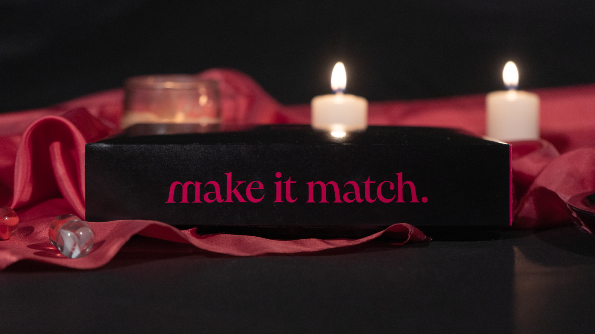
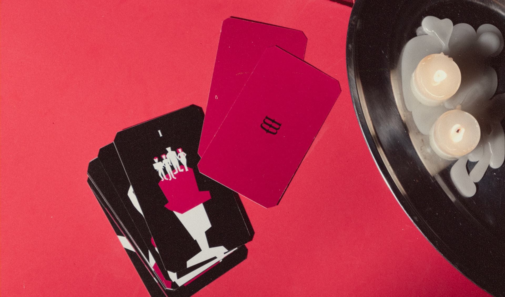
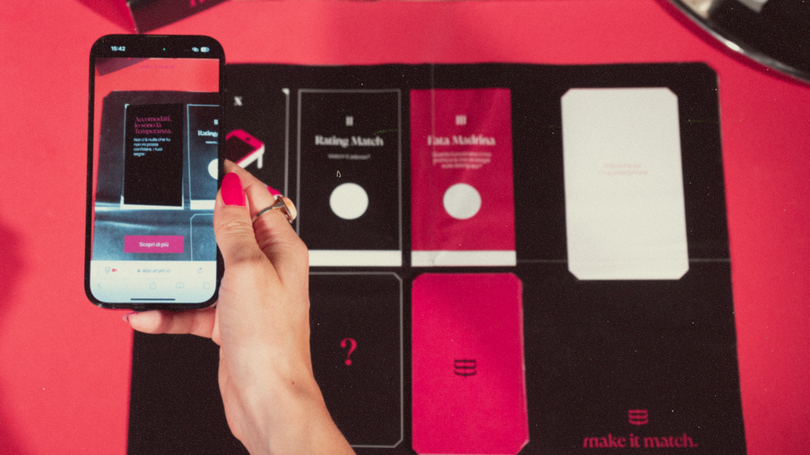

Il progetto sollecita una riflessione critica su come la dimensione affettiva, nell’era digitale,
venga
influenzata da logiche economiche e
performative. In maniera provocatoria, Make it match - utilizza supporti fisici, digital
design e tecnologia AR per indagare e
rendere visibile il capitalismo emotivo nascosto dietro le dating app.
I tarocchi per predire il futuro della tua vita sentimentale sulle dating app e trovare il vero
amore... o almeno provarci.
I tarocchi, proprio come le dating app, sono uno strumento di introspezione,
non di previsione, anche se ci piace far finta che funzionino davvero.

“Human relationships are rich and they're messy and they're demanding. And we clean them up with
technology.”
Sherry Turkle,
Ted Talk “Connected but alone?”, 2012
Le dating app si presentano con la promessa di trovarci l’anima gemella, ma attivano un
meccanismo di intrattenimento e insoddisfazione continua, progettato per far sì che gli utenti
vi trascorrano sempre più tempo e tornino costantemente a utilizzarle.
FASE 1
I Tarocchi
Marker dell’esperienza AR, le 13 carte reinterpretano i tarocchi tradizionali alla luce dei
risultati della ricerca sugli effetti collaterali delle dating app. Ogni figura, scelta e
rielaborata per affinità simbolica, incarna una criticità del vivere emotivo digitale e
suggerisce
una possibile via di consapevolezza o trasformazione.

FASE 2
La Lettura AR
La lettura di ogni carta è effettuata in AR.
Ogni carta ha un suo significato che l’utente deve scoprire ed interpretare.

FASE 3
Il Sito
Il sito completa l’esperienza con tutti gli approfondimenti e le spiegazioni. Prevede tre
sezioni
principali: database delle carte, spiegazione del gioco e divulgazione sul tema.
Visita il sito per scoprirne di più e partecipa anche tu al
sondaggio per raccontarci la tua
esperienza.